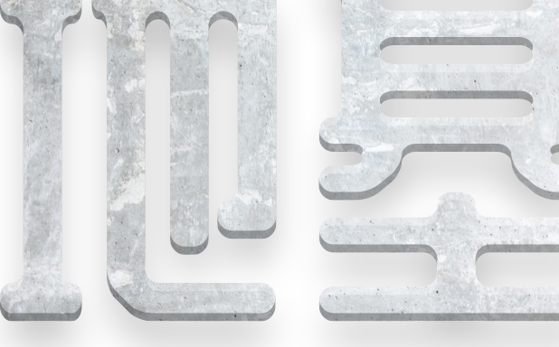
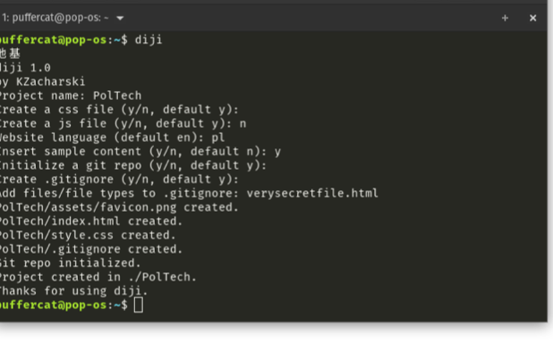
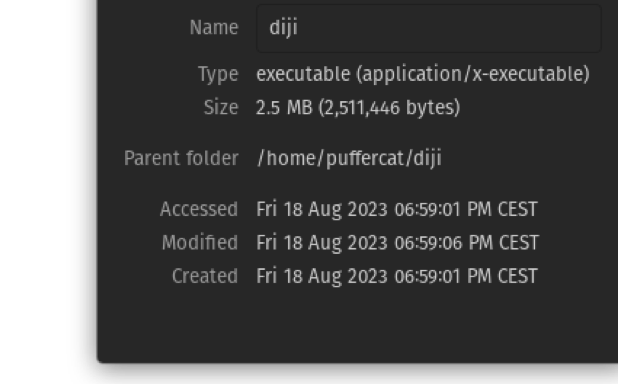
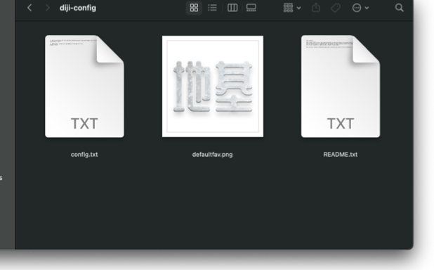
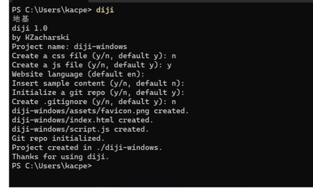
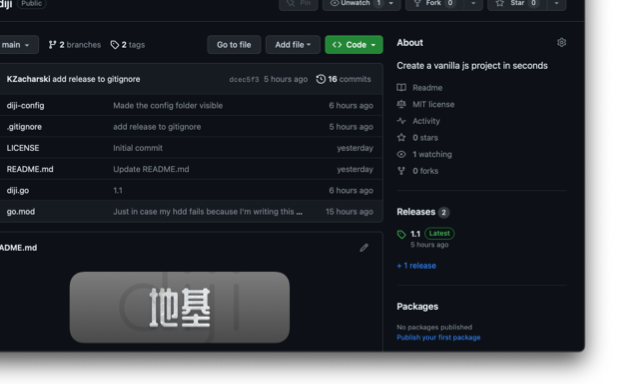

地基 (Dìjī) means foundation in Chinese
That's what diji is, just the foundation. It's not a framework, it's not even a static website generator. It's just a simple program that makes it quicker and easier to start a vanilla project.

Works everywhere
Either move it to your projects folder (for example documents) or add it to your $PATH and use it everywhere.

Fast and lightweight
While most similar tools (usually for frameworks and generally more advanced) are based on NodeJS, diji is written in go and compiled to a binary.

Favicons by default
Paste your logo or anything you want to use as the default favicon to diji's config folder and it will be added to every project created.

Perfectly multiplatform
diji works just as well on macOS, Linux and Windows.
